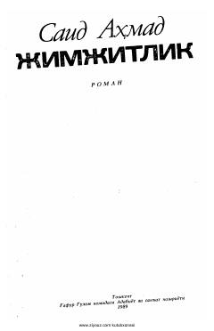

JSaid Ahmadning insoniy taqdirlar haqidagi ta'sirchan o'zbek romani.
Said Ahmadning 'Jimjitlik' romani o'zbek adabiyotining sevimli asarlaridan biri bo'lib, respublikamizning keyingi yillardagi hayotini aks ettiradi. Romanda Tolibjon va uning atrofidagi odamlarning taqdiri, kasallik, do'stlik va hayot sinovlari tasvirlanadi. Asar muallifning yuksak mahoratini namoyon etgan, o'quvchini hayratga soladigan voqealar bilan to'la.